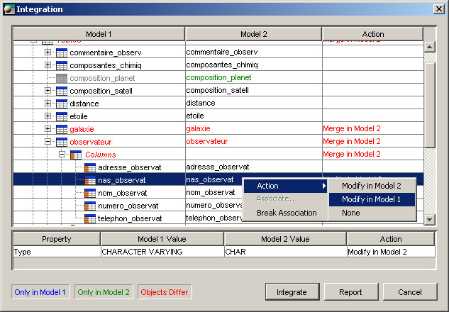
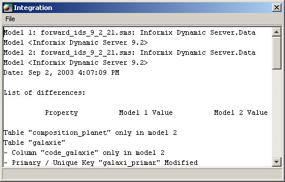

The integration is the interactive process in which two models are compared and can be synchronized.
It
is the process of updating a model using another model. This feature uses
semantic information from models of the same type. Here is a list of all
the model types that can be integrated.
Model types
To
integrate models:
Specification:
With a data model, the integration will create hierarchical links if you
compare subs and supermodels.
Options
Use as identifier: the integration process uses object names or physical names in the matching process and the identifier is displayed in the integration window.
Scope: the process applies a filter to the concepts and descriptors that are compared. This list is based on a compatible set of concepts with regards to the type and the target system, if any, of the selected models. It is possible to save and reload (.scp) integration scope parameters.
Match external objects using: an external object is one that is not included in the two models selected for integration. For example, when integrating two data models, it is likely that columns will refer to domains that are not part of a specific domain model, the domain is an external object.
Process
The integration process uses the hierarchical links to associate objects and the name or the physical name according to the selected value.
The upper portion of the interface window displays side-by-side information concerning the compared models. You will notice that the tree structure resembles the explorer window's view.

BLUE
The object is only in model 1
GREEN
The object is only in model 2
RED
Objects are different
BLACK
Objects are identical
The
lower portion will display differences, if any, between the object properties.
Object actions
After comparing the two models and displaying the differences, the user can modify the models in a selective manner, and this in any direction. However, it is important to specify that all actions are applied hierarchically on the object selection. Here are the actions offered:
Report
A report is always produced at the end of an integration process. This report gives information on the two models that were compared, the date and time, the list of differences and the modifications applied (if there are any). For impact analysis purposes, this same report can also be produced before the integration.
